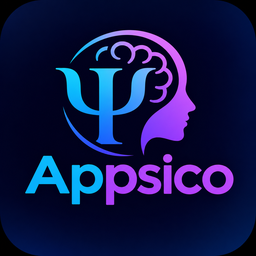

← Voltar ao AppsicoÚltima atualização: novembro de 2026
Esta política explica como o aplicativo Appsico trata as informações de quem o utiliza, de acordo com a Lei Geral de Proteção de Dados (Lei nº 13.709/2018 – LGPD).
O Appsico é um aplicativo de prontuário eletrônico destinado a psicólogas e psicólogos. Contato: contato@appsico.com.br.
Os prontuários e demais informações sobre pacientes são registrados pelo profissional e criptografados no próprio aparelho (AES-256) antes de serem enviados à conta do usuário na nuvem, onde ficam guardados apenas dessa forma, para sincronizar celular e computador. A chave que abre esses dados é protegida pela senha da conta e por um código de recuperação que só o usuário conhece. Para que o usuário não perca os prontuários se esquecer a senha e o código, uma cópia dessa chave fica guardada na nuvem, trancada em um cofre de chaves separado (Supabase Vault), e só é devolvida ao próprio usuário, depois que ele entra na conta pela senha ou pelo link enviado ao seu e-mail. O Appsico não usa essa cópia para nenhum outro fim. Em relação aos dados dos pacientes, o profissional é o controlador, nos termos da LGPD.
Para criar a conta, o Appsico guarda nome, CRP, e-mail e a situação da assinatura (período de teste, plano e validade). Os dados ficam no Supabase, provedor de banco de dados e autenticação. Os pagamentos são processados pelo Mercado Pago, que recebe os dados necessários à cobrança; o Appsico não armazena dados de cartão.
O acesso usa e-mail e senha da conta e, em cada aparelho, um PIN de 4 números. Os prontuários são criptografados de ponta a ponta. Recomendamos manter o aparelho com bloqueio de tela, guardar o código de recuperação em local seguro e sair da conta em computadores compartilhados.
Os prontuários ficam guardados na conta do profissional enquanto ela existir. Sem assinatura ativa (plano grátis), todos os dados continuam disponíveis para consulta e exportação. A exclusão da conta apaga definitivamente os dados da nuvem; antes de excluir, cabe ao profissional exportar e preservar os registros pelo prazo exigido pelo Conselho Federal de Psicologia.
Você pode consultar e corrigir seus dados de cadastro no próprio app e excluir a conta em Configurações → Conta e nuvem. Outras solicitações: contato@appsico.com.br.
Esta política pode ser atualizada. A versão vigente estará sempre disponível nesta página.